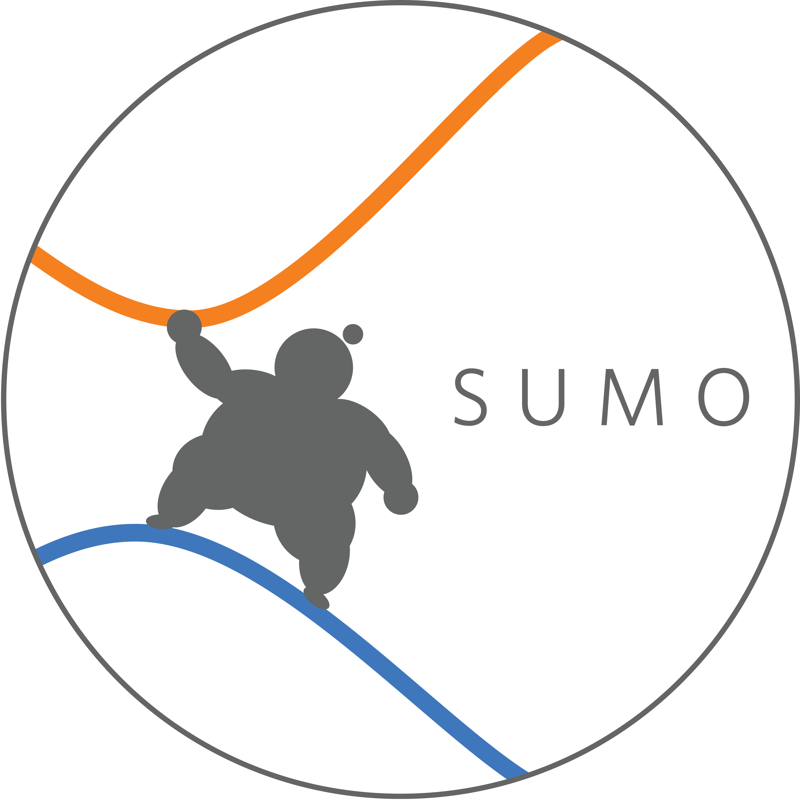
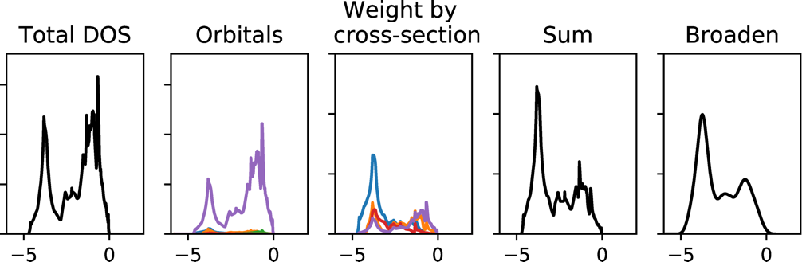
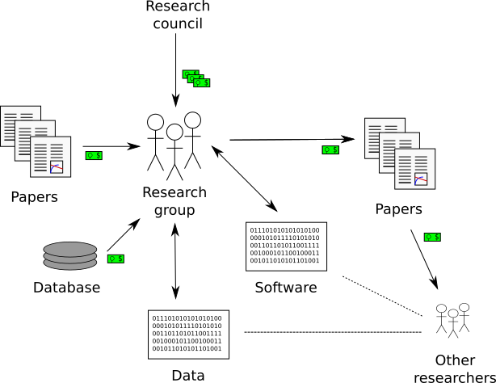
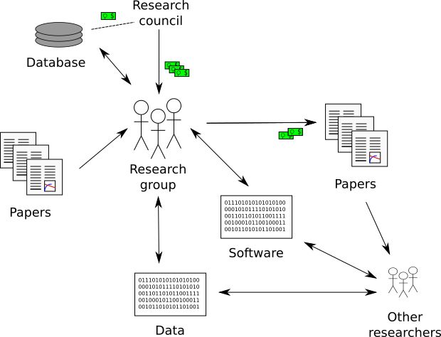
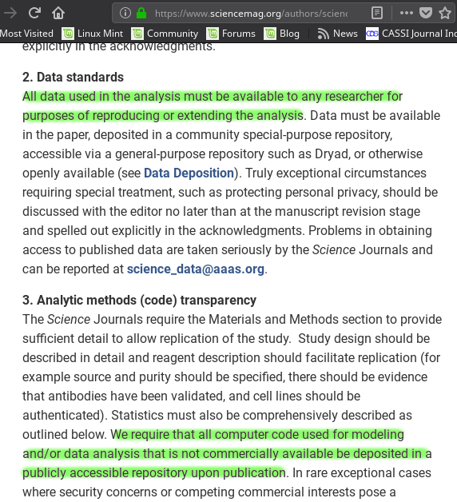
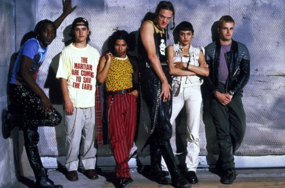
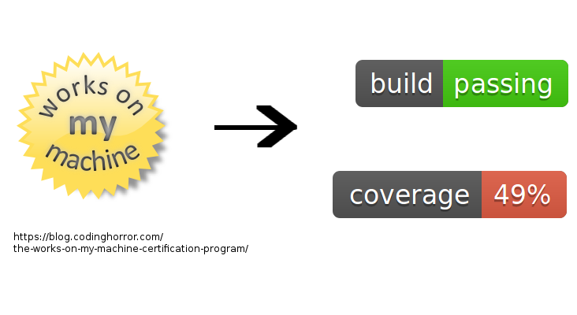

Open Science & Sustainable Research Software
Adam J. Jackson
adam.jackson@ucl.ac.uk
Introduction
About me
- MEng chemical engineering at University of Bath (2006-2011)
- MRes/PhD sustainable chemical technologies (Bath, 2011-2016)
- Computational materials chemistry with Prof Aron Walsh
- "Thermodynamics for practical kesterite photovoltaics"
- Post-doc in UCL Chemistry (Scanlon Materials Theory Group)
- Working on novel transparent conductors
About my programming
- Briefly exposed to BASIC at school
- Crash-course in Fortran in 2006
- Used some Matlab in undergrad
- Self-taught Python since 2011
- Tinkered with some other stuff (C, Lisp, Julia, …)
- Never had a structured course beyond language basics
- Never been mentored by an experienced programmer
- I use significant amounts of supercomputer time!
- High-performance academic codes licensed from other groups
- Mainly write code for setup and analysis
Plug some projects
- ascii-phonons
- Developed while at Bath
- Visualise phonon eigenvectors from Phonopy
- Wraps Blender and provides a simple GUI
- "Sumo"
- Developed at UCL with Alex Ganose
- (Logo by Ben Williamson)
- Setup / plotting of VASP calculations
- Experimental support for Questaal (LMTO QSGW)
- Gallery

- "Galore"
- Developed at UCL with Alex Ganose
- Simulated photoelectron spectra from DFT PDOS
- Supports VASP, GPAW


Talk overview
https://ajjackson.github.io/open-research-software/
- Open science
- Open research software
- Project management
- Writing better code
Open Science
Open Science
Open Science is scholarly research that is collaborative, transparent and reproducible and whose outputs are publicly available.
- In science we are usually building on previous work
- It sucks when we can't access that work!
- Papers
- Data
- Models
- For our funders, this is inefficient
Traditional model

Open science

- UKRI (body including EPSRC, AHRC, Innovate UK, STFC…) expects that articles funded by research councils will be freely available online
EPSRC requires a data access statement in publications
… publicly funded research data should generally be made as widely and freely available as possible in a timely and responsible manner
Some vocab
- N 'R's (where N is 2, 3, 4 or 5)
- Rerun (same people, tinker with setup)
- Repeat (same people, same setup)
- Replicate (different people, same setup)
- Reproduce (different people, different setup)
- Reuse (similar setup, different experiment)
- Some other presentations on this topic
Less vocab
- Reproducible outputs
- Improve quality of research
- Reusable outputs
- Improve efficiency of research
Reproducibility
- Provide sufficient information for others to reproduce results
- This should be the minimum standard for a scientific paper…
- In practice it's not easy!
Re-use
- Paper outputs: numbers are better than plots
- Databases: one large consistent set or aggregate of many
- Software: building powerful code takes time, should be generalised
- As a "re-user", the hardest part can be obtaining outputs
- Available on web :-)
- "Available by request" :-(
FAIR
Principles for "scientific data management" https://www.nature.com/articles/sdata201618
- Findable
- Use persistent identifier
- Use metadata
- Available
- Retrievable by an open standard protocal
- Interoperable
- Format data in a formal, accessible way
- Reusable
- "richly described" and using community standards
- Usage license and detailed provenance
Journal policies
- In response to research council pressure, journals are requiring more
Science data/code availability policy (2011)
All data necessary to understand, assess, and extend the conclusions of the manuscript must be available to any reader of Science. All computer codes involved in the creation or analysis of data must also be available to any reader of Science. After publication, all reasonable requests for data and materials must be fulfilled. Any restrictions on the availability of data, codes, or materials, including fees and original data obtained from other sources (Materials Transfer Agreements), must be disclosed to the editors upon submission…
In a recent study researchers requested data and code from a random sample of 204 Science papers…
When you approach a PI for the source codes and raw data, you better explain who you are, whom you work for, why you need the data and what you are going to do with it.
I have to say that this is a very unusual request without any explanation! Please ask your supervisor to send me an email with a detailed, and I mean detailed, explanation.
Thank you for your interest in our paper. For the [redacted] calculations I used my own code, and there is no public version of this code, which could be downloaded. Since this code is not very user-friendly and is under constant development I prefer not to share this code.
R is a free software package available at www.r-project.org/ I used R for the [redacted] models. As you probably know, [redacted] and [redacted] are quite complicated. But I don’t have to tell you that given that you are a statistics student! I used Matlab for the geometry.
The policy has been tweaked, but was that really the problem?

Good practice
- Keep raw data
- Keep metadata
- Avoid proprietary data formats
- Automate everything
- Put it online
Open Research software
Research software
- 92% of academics use research software
- 69% say that their research would not be practical without it
- 56% develop their own software
- (worryingly, 21% of those have no training in software development)
(Simon Hettrick, Deputy Director of SSI) https://www.software.ac.uk/blog/2014-12-04-its-impossible-conduct-research-without-software-say-7-out-10-uk-researchers

- Supporting research software community in the UK
- "Better software, better research"
- Training (partnership with Software Carpentry)
- Advocacy/policy (Research Software Engineers)
- Fellowship programme
Open Source
- Many programming languages (C, C++, Fortran, …) are translated (compiled) to machine code
- Software that is distributed as a machine code "binary" cannot easily be inspected (e.g. Microsoft Office)
- Reading machine code is serious hacker territory

Hackers (1995)
The Matrix (1999)
- Open Source means that the code can be examined as written
- Python programs are generally not compiled before they are run
- Open-source by default!
- Open source in a literal sense helps reproducibility:
- exact process is exposed
- implementation details can be identified/test/replicated
- including bugs!
- Academic software is already usually distributed as source
- Open source is not enough! Licensing matters.
- "Free Open Source Software (FOSS)" is
- generally "free" as in beer (gratis)
- always "free" as in freedom (libre)

If the users don't control the program, the program controls the users. With proprietary software, there is always some entity, the "owner" of the program, that controls the program and through it, exercises power over its users. A nonfree program is a yoke, an instrument of unjust power.
– Richard Stallman
Politics aside…
- Default copyright status:
- I have no right to distribute your code
- Neither of us has the right to distribute my modified version
- FOSS licenses give us the right to build on software and distribute it ourselves
- This is essential for community development of a codebase
- In practice good changes can make it "upstream" or form a new code
- Hybrids are possible: paid academic license, community development
Open source development
- Open source projects make heavy use of version control features
- "Main" repository (e.g. on GitHub)
- Work on "branches" and "forked" copies
- Keep change history
- They require good communication and a sense of direction
- Communication channels
- Accepting contributions
Sustainable software
Research software: the uncomfortable truth
Spreadsheets are software
Spreadsheets are (terrible) software
Spreadsheets are (terrible) software
- Mix data and processing
- Data cells and code cells look the same
- Errors can be hard to spot even in influential studies
- Difficult to document
- Difficult to test
- Difficult to re-use safely
Best practice: things found in a great project
- README / docs
- LICENSE
- CONTRIBUTING
- CHANGELOG
- INSTALL
- CITATION
- tests
Documentation
You should watch Daniele Procida's amazing talk about documentation
- Pycon video: https://www.youtube.com/watch?v=azf6yzuJt54
- Blog version https://www.divio.com/en/blog/documentation/
The following ideas are directly taken from it
Four types of documentation
- Tutorials
- How-to guides
- Explanation
- Reference
Four types of documentation
Daniele uses a wonderful cooking analogy for these:
- Tutorials "Teaching a small child to cook"
- How-to guides "A recipe in a book"
- Explanation "An article on culinary social history"
- Reference "A reference encyclopedia article"
Four types of documentation
- These do not need to be located in four different places
- They should all exist and be findable at the right time
- For a very small project this could be a README file + academic references.
LICENSE
- Licensing is complicated
- Don't make it more complicated by inventing your own
- Use of standard licenses makes it quicker and easier for users
- https://choosealicense.com/
CONTRIBUTING
- Are external contributions welcome?
- How should people interact with the project?
- Do you have style/format requirements?
CHANGELOG
Keep track of changes between different versions
INSTALL
- Try to make installation easy…
- … but don't be weird about it!
sudomakes me nervous- For Python projects, use setuptools
- For compiled languages, use a simple makefile or autoconf
CITATION
- This is cutting edge!
- There still isn't really a standard way to cite code…
- … but there should be!
- Citation file format has been proposed.
- Based on YAML: readability balanced for humans and machines
- Can include papers
- New journals are emerging
tests
- Don't re-invent the wheel, use an existing framework for non-trivial testing
- "Continuous Integration" e.g. Travis CI automatically runs tests when changes are pushed to repository
Coverage testing is depressing but helpful

The actual coding bit
How to get better at programming
- Programming is better with friends! It can be easier to spot an elegant way of doing something in someone else's code
- Watch the issue tracker of a project you care about (e.g. ASE); this is a great way to learn from other people and get your feet wet with small contributions.
- Assume that someone else will see and tinker with your code. This "someone else" is probably you in a year's time.
- Don't let perfect get in the way of good
- Someone else can help you get from good to perfect
Summary
Summary
- Good science is open about its methods
- They probably involve software
- You're going to have to show people your software
- Good software is approachable and maintainable
- There is an overwhelming number of tools and options
- but you can start by imitating projects you like